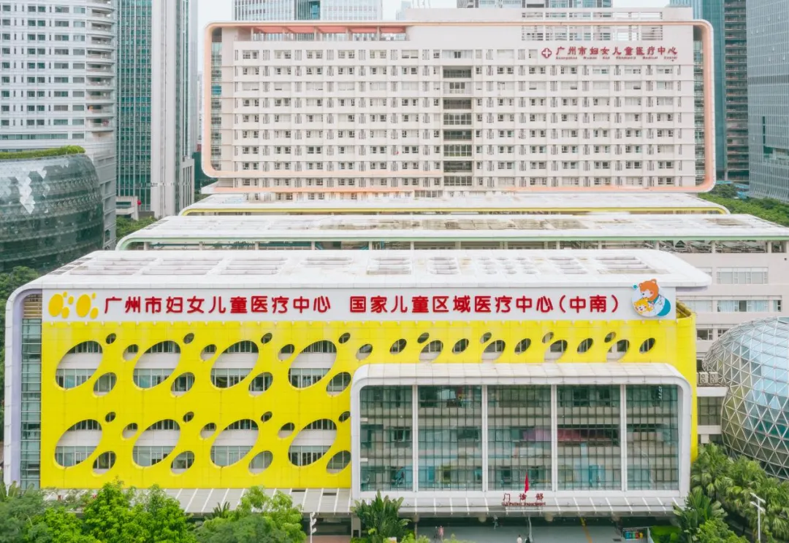
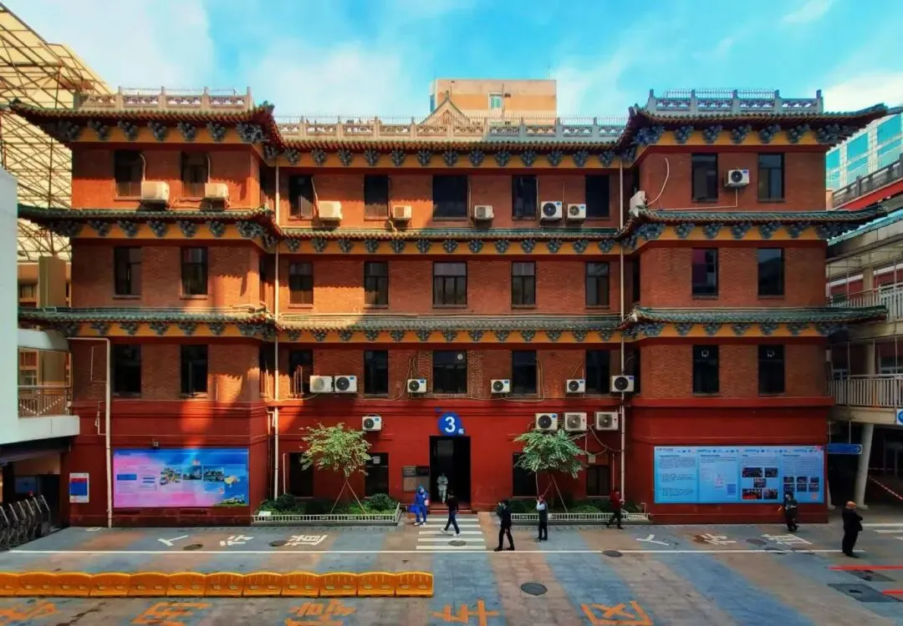
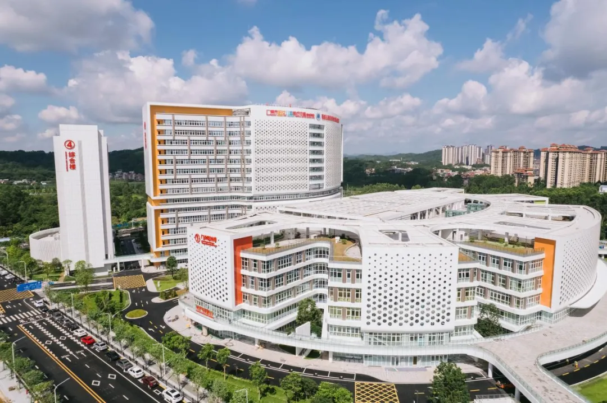
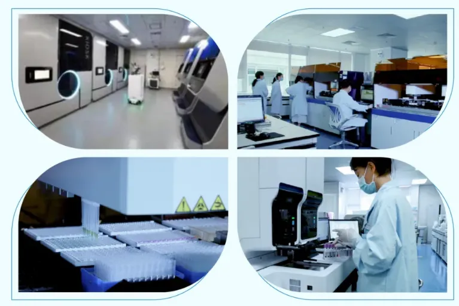

广州医科大学附属妇女儿童医疗中心2026年儿科研究所博士后招聘简章
原文：https://mp.weixin.qq.com/s?__biz=MzAwMzIzOTk5OQ==&mid=2247537006&idx=2&sn=331dc00e963359b14940a4f4276f2843&chksm=9b3c283eac4ba128ee1dc6ee2eeb54e738da6d662fea6319d58bdf02f49c149dd986f522f2b6#rd 合集：求职/求学/招聘
01
写在前面
我们长期发布招聘/求职板块(甚至我给自己都发了求职：Biomamba求职| 国奖+4篇一作SCI)，欢迎各位老师/老板欢迎联系~我们也在招贤纳士：Biomamba生信基地诚招运营。其它需要求职的小伙伴也欢迎把简历发给我们[Biomamba_zhushou]，大家一起找工作/学习。用人单位也可以联系我们免费刊登招聘信息~
0 2
医院介绍
广州医科大学附属妇女儿童医疗中心（广州市妇女儿童医疗中心），是国内规模最大的公立三级甲等妇女儿童专科医院，国家儿童区域医疗中心（中南），华南地区唯一具有心脏移植资质的儿童专科医院，拥有国家临床重点专科8个，国家特色保健专科5个，省临床重点专科11个。2023年全国综合排名获评A+等级，儿外科位列全国第5名，儿内科位列全国第7名，罕见病专科位列全国第8名。现有各类高层次人才315人次。其中，享受国务院特殊津贴、国家杰出青年基金、国家优秀青年基金等国家级人才19人。



中心设置了妇幼健康与疾病研究院，下设“2所2中心7平台”，包括优生围产研究所、儿科研究所、罕见病中心、临床研究中心，以及出生队列研究室、临床生物资源库、新生儿筛查中心、分子医学中心、脐血库、临床数据中心、动物中心，拥有8个省级重点实验室及研究中心、5个市级重点实验室，已连续10年国家自然科学基金立项数稳定在30项以上，位居国内同类专科医院之首，连续6年获得杰青、优青、重点项目等高水平国家级项目。

中心博士后科研工作站已累计进站博士后268名，现有在站博士后68名，在站博士后累计获国家自然科学基金项目资助100余项、获中国博士后科学基金资助70余项，以主作者发表SCI论文超过250篇、获国家/省/市级人才项目20人。2020年荣获全国博士后工作优秀等级。
03
课题组
（一）周文浩课题组
周文浩，国家重点研发计划首席科学家，国务院特殊津贴专家，入选2023-2025年Elsevier全球前2%顶尖科学家“终身科学影响力榜单”。现任中华医学会儿科学分会副主任委员、中华医学会儿科学分会新生儿学组组长、中国医师协会医学遗传分会副会长、中华医学会罕见病分会常委等。
主要研究方向：神经发育与神经系统疾病的基础与临床转化研究；新生儿疾病的多模态临床诊疗模型与人工智能诊断系统；儿童遗传罕见病的多组学分析、诊断与治疗研究。牵头构建国内领先的新生儿分子基因诊断体系，建立全国首个新生儿神经重症监护单元。主持国家重点研发计划、国家自然科学基金重点项目等，编写专著20余部，获得专利9项，发表SCI论文200余篇，获上海市科技进步一等奖、中华医学奖和教育部二等奖等荣誉。
联系邮箱：myoung1314@foxmail.com
（二）王星云课题组
王星云，上海市“启明星计划”入选者。现任中华医学会儿科分会新生儿学组专业协作组成员，中国妇幼保健协会早产儿围产期一体化管理专业委员会委员。
长期从事生命早期器官发育、损伤与再生机制研究，重点关注器官发育、损伤和再生中的力学感受器、应力、剪切力和应力弛豫机制研究；母乳保存、母乳活性成分、母乳喂养行为、母乳库管理研究；生命早期母婴对话的小分子代谢物与新型表观修饰机制研究。主持国家自然科学基金等科研项目，承担国家重点研发计划子项目，研究成果发表在JAMA Pediatr、Mol Cancer、Mol Ther、Cell Death Differ等高水平国际期刊上。
联系邮箱：wxy@shmu.edu.cn
04
招聘信息
一、招聘岗位及薪酬待遇
1.招聘岗位：博士后；计算机相关；
2.年薪：最高可达60万元（税前）；
3.科研经费：20万元；
4.人才支持：在站期间，提供贯穿全程的一对一项目申报辅导，助力博士后申请国家、省、市级人才与科研项目；享受具有竞争力的科研绩效奖励；
5.出站待遇：出站后择优留院，并可申请广州市安家费30万元，享受各项人才支持政策；
6.支持保障：协助办理广州市户口；
7.员工关怀：免费提供各类文体活动场地、健身房，以及职工春秋游及各类活动等。
二、招聘程序
1.报名时间：长期有效；
2.应聘方式：有意者请将个人详细简历（务必含联系电话、邮箱、教育/工作经历、学术业绩等）及有关证明材料发送至课题组联系邮箱，邮件主题请标注：“应聘博士后+姓名+专业”。
温馨提示：应聘过程中，请保持联系电话通畅，并及时查看邮件或短信。
人事部联系方式
 联 系 人：陈老师联系电话：020-38076501、38076022（工作日8：00-12:00，14:00-17:00）地 址：广州市金穗路9号广州市妇女儿童医疗中心住院部15楼人事部网 址：www.gzfezx.com（欢迎登录医院主页，点击“人才招聘”查阅更多招聘信息）邮 箱：gzfe38076501@163.com
联 系 人：陈老师联系电话：020-38076501、38076022（工作日8：00-12:00，14:00-17:00）地 址：广州市金穗路9号广州市妇女儿童医疗中心住院部15楼人事部网 址：www.gzfezx.com（欢迎登录医院主页，点击“人才招聘”查阅更多招聘信息）邮 箱：gzfe38076501@163.com